terça, 20/10 a terça, 03/11porções para 1 pessoaquase tudo na air fryer
Cada dia tem a sua página, com o cardápio inteiro, do café à ceia, a foto do prato principal, a receita passo a passo e o prompt que gerou a foto no Gemini. A lista de compras cobre os 15 dias de uma vez só.
O que os pratos entregam
O cardápio gira em torno do que a Lala mais precisa agora. São comidas de todo dia: ovo, carne, feijão, folha escura, leite e semente.
Colinaovos
Entra na formação do cérebro e da memória da bebê. Por isso tem ovo em quase todo café da manhã.
Ômega-3chia, linhaça, nozes e ovos
Ajuda a formar o cérebro e a retina. A chia e a linhaça entram na vitamina e no empanado. O DHA mesmo vem do suplemento que a obstetra indicar.
Ferrocarne, feijão, folhas escuras
Carrega oxigênio para a Mari e para a Lala. A laranja do café ajuda o corpo a aproveitar o ferro do feijão.
Cálcio e iodoleite, queijo, iogurte
Cálcio para os ossinhos. Iodo para a tireoide, que comanda o desenvolvimento do cérebro. O sal iodado da lista também conta.
Proteínafrango, carne, peixe e ovos
É o tijolo de tudo que está crescendo aí dentro. Tem em todo almoço e em todo jantar.
Ácido fólicofeijão, lentilha, espinafre e laranja
Protege o sistema nervoso da bebê. Continue o suplemento que a obstetra passou.
Confirme com a obstetra a suplementação de ácido fólico, ferro e DHA. O livrinho ajuda, mas quem decide a dose é ela.
Regras de segurança na gestação
Cinco regras que valem para todos os 15 dias.
Carnes, frango, peixe e ovos sempre bem cozidos. Nada malpassado ou cru.
Só leite e queijos pasteurizados.
Peixe só tilápia e pescada branca, sempre bem assados.
Frutas e verduras bem lavadas e higienizadas.
Sem sardinha e sem atum.
Quase tudo vai na air fryerPorções para 1 pessoaSal sempre iodado
Lista de compras
segunda, 19/10
Tudo para os 15 dias, para 1 pessoa. Marque o que já entrou no carrinho. A lista fica salva só neste aparelho.
0 de 44 no carrinho
Açougue e peixaria
Laticínios e ovos
Hortifrúti
Mercearia
Congele em porções as carnes e o peixe que forem usados depois do dia 25/10.
Semana 1 20/10 a 26/10
dia1
terça, 20/10
Frango à parmegiana
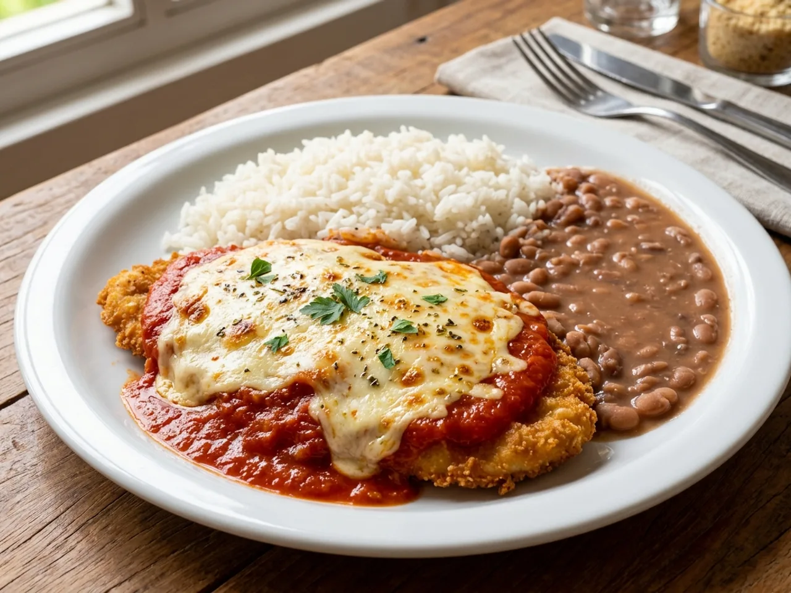
Cardápio do dia
Café
panqueca de banana com aveia e mel, e um copo de leite com achocolatado
Lanche da manhã
iogurte com morango picado
Almoço
frango à parmegiana com arroz, feijão e espinafre escondido no molho
Lanche da tarde
maçã com castanha-de-caju
Jantar
sopa cremosa de abóbora com frango desfiado e torradinha com queijo
Ceia
copo de leite morno com mel
Ingredientes do almoço
1 filé de frango aberto, 1 ovo, 3 colheres de panko, 2 colheres de farinha de trigo, 1/2 xícara de molho de tomate, 1 punhado de espinafre, 2 fatias de muçarela, parmesão ralado, sal iodado.
Modo de preparo
Bata o espinafre com o molho de tomate no liquidificador e aqueça por 5 minutos.
Tempere o frango com sal, passe na farinha, no ovo batido e no panko.
Air fryer a 200 °C por 12 minutos, virando na metade. Corte no meio e confira se não está rosado.
Cubra com o molho, a muçarela e o parmesão. Volte por 4 minutos até gratinar.
Prompt da foto
Foto profissional de comida, filé de frango à parmegiana dourado e crocante, coberto com molho de tomate vermelho brilhante e muçarela derretida e borbulhante, ao lado de arroz branco soltinho e feijão, prato branco, mesa de madeira, luz natural, close apetitoso
dia2
quarta, 21/10
Macarrão com almôndegas
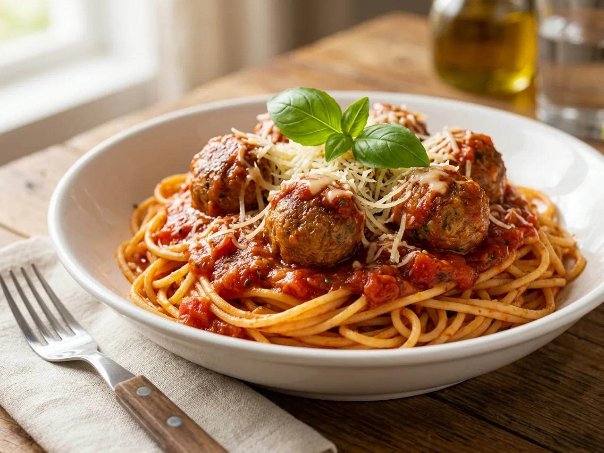
Cardápio do dia
Café
ovos mexidos cremosos com queijo e pão integral, e suco de laranja
Lanche da manhã
vitamina de banana com leite e 1 colher de chia
Almoço
macarrão com almôndegas ao molho de tomate com cenoura escondida
Lanche da tarde
mamão com mel
Jantar
tapioca de frango com requeijão
Ceia
iogurte natural
Ingredientes do almoço
150 g de carne moída de patinho, 1/2 cenoura ralada fina, 1 ovo, 1 colher de aveia, 1 colher de parmesão, 1 xícara de molho de tomate, 80 g de macarrão, sal iodado.
Modo de preparo
Misture a carne, a cenoura, o ovo, a aveia, o parmesão e o sal. Faça bolinhas.
Air fryer a 190 °C por 12 minutos, chacoalhando na metade, até ficarem bem assadas por dentro.
Cozinhe o macarrão. Aqueça o molho, junte as almôndegas por 5 minutos e sirva por cima.
Prompt da foto
Foto profissional de comida, prato de espaguete com almôndegas suculentas ao molho de tomate, parmesão ralado por cima, folhinha de manjericão, prato fundo branco, luz natural quente, close apetitoso
dia3
quinta, 22/10
Hambúrguer caseiro
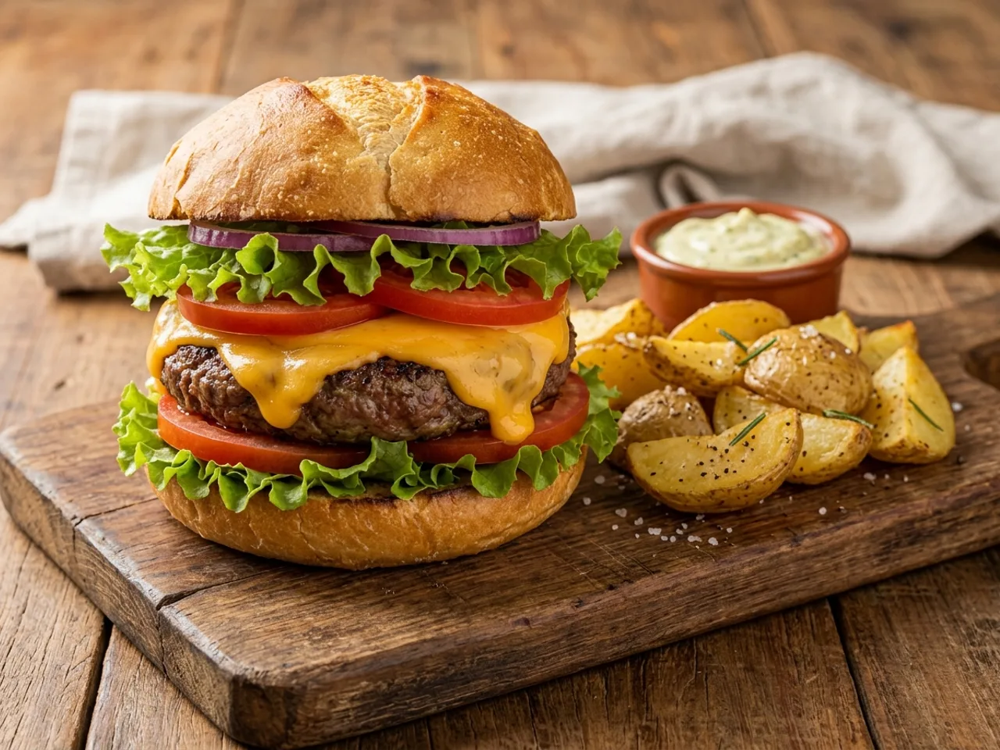
Cardápio do dia
Café
misto quente de pão integral com muçarela, e leite com cacau
Lanche da manhã
morangos com iogurte e mel
Almoço
arroz, feijão, bife acebolado e batata rústica na air fryer
Lanche da tarde
banana com aveia e canela
Jantar
hambúrguer caseiro com queijo, alface e tomate
Ceia
leite morno
Ingredientes do jantar
150 g de carne moída de patinho, 1 colher de aveia, sal iodado, 1 fatia de muçarela, 1 pão de hambúrguer ou 2 fatias de pão integral, alface e tomate bem lavados.
Modo de preparo
Tempere a carne com sal e aveia e modele um disco.
Air fryer a 200 °C por 10 a 12 minutos, virando na metade, até ficar bem passado, sem rosado no meio.
Coloque o queijo por cima no último minuto. Monte com alface e tomate.
Prompt da foto
Foto profissional de comida, hambúrguer caseiro alto com queijo derretendo pelas bordas, alface fresca e tomate, pão dourado, batatas rústicas ao lado, tábua de madeira, luz natural, close apetitoso
dia4
sexta, 23/10
Nuggets de tilápia
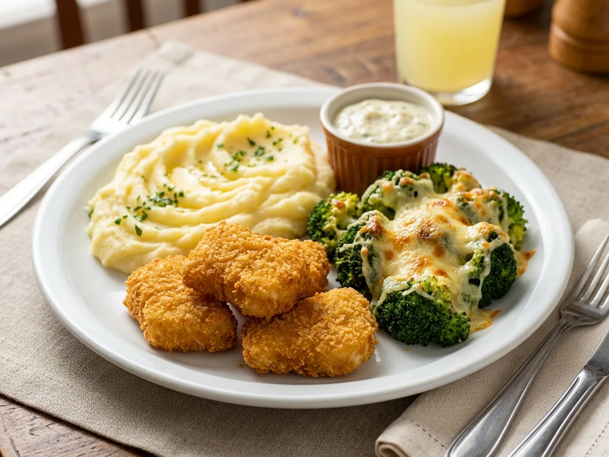
Cardápio do dia
Café
tapioca com ovo e queijo, e suco de laranja com acerola
Lanche da manhã
iogurte com castanhas
Almoço
nuggets de tilápia com purê de batata e brócolis gratinado
Lanche da tarde
manga picada
Jantar
canja de frango com arroz e cenoura
Ceia
leite com mel
Ingredientes do almoço
150 g de filé de tilápia em tiras, 1 ovo, panko, farinha de trigo, sal iodado, limão. Purê: 2 batatas, leite e 1 colher de requeijão.
Modo de preparo
Tempere as tiras de tilápia com sal e limão. Passe na farinha, no ovo e no panko.
Air fryer a 200 °C por 10 minutos, virando na metade. O peixe deve ficar opaco e soltando em lascas.
Cozinhe as batatas, amasse com leite e requeijão.
Brócolis cozido com parmesão por cima, 3 minutos na air fryer.
Prompt da foto
Foto profissional de comida, nuggets de peixe branco dourados e crocantes, purê de batata cremoso e brócolis verde gratinado com queijo, molhinho ao lado, prato branco, luz natural, close apetitoso
dia5
sábado, 24/10
Carne à parmegiana
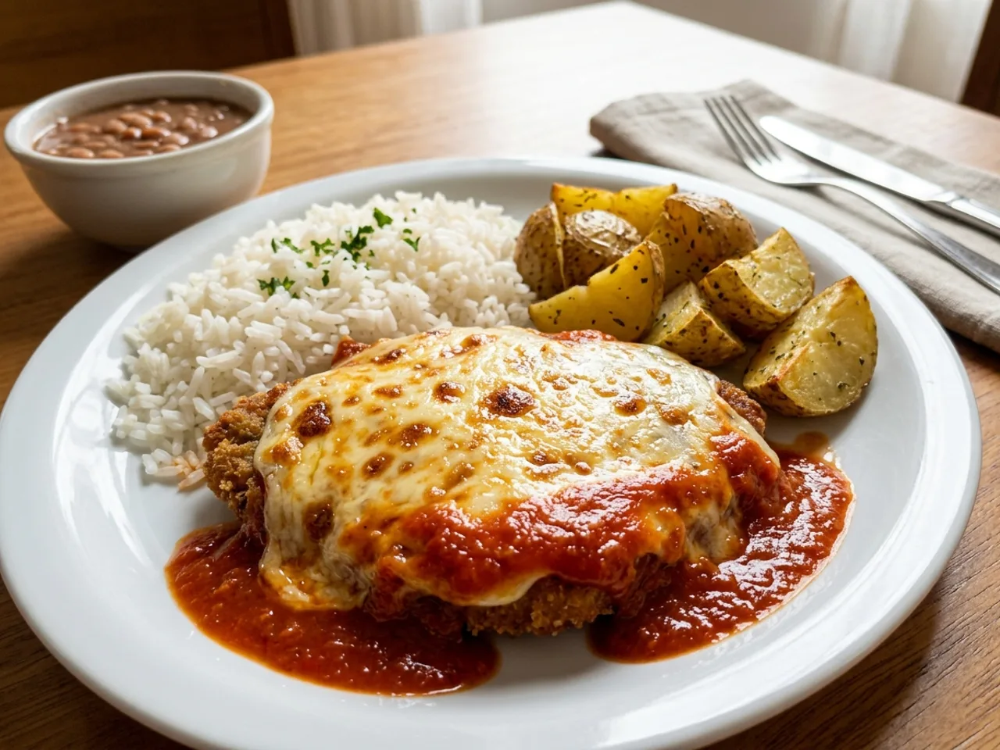
Cardápio do dia
Café
pão de queijo de frigideira (ovo, tapioca e queijo) e vitamina de morango
Lanche da manhã
banana com mel
Almoço
bife à parmegiana com arroz, feijão e batata assada
Lanche da tarde
iogurte com chia
Jantar
omelete de forno com espinafre, tomate e queijo
Ceia
leite com cacau
Ingredientes do almoço
1 bife de patinho batido fino, 1 ovo, panko, farinha, molho de tomate com cenoura batida, 2 fatias de muçarela, parmesão.
Modo de preparo
Bata a cenoura cozida com o molho de tomate e aqueça.
Empane o bife: farinha, ovo e panko.
Air fryer a 200 °C por 12 minutos, virando na metade, até ficar bem passado.
Molho, muçarela e parmesão por cima, mais 4 minutos.
Prompt da foto
Foto profissional de comida, bife à parmegiana gratinado com queijo dourado e borbulhante, molho de tomate vermelho escorrendo, arroz, feijão e batatas assadas, prato branco, luz natural, close apetitoso
dia6
domingo, 25/10
Lasanha de frango
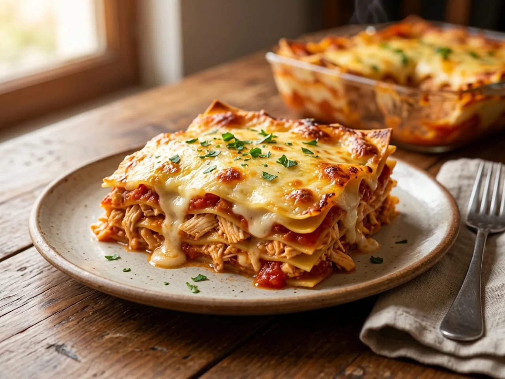
Cardápio do dia
Café
panqueca de aveia com morango e mel, e leite
Lanche da manhã
salada de frutas com iogurte
Almoço
lasanha de frango com molho de tomate e espinafre
Lanche da tarde
torrada com requeijão e suco de laranja
Jantar
caldinho de feijão com torradinhas e queijo ralado
Ceia
iogurte
Ingredientes do almoço
200 g de frango cozido e desfiado, 1 maço pequeno de espinafre, 1 caixa de molho de tomate, massa de lasanha, 150 g de muçarela, parmesão.
Modo de preparo
Refogue o frango com o molho e o espinafre picado por 5 minutos.
Em refratário pequeno, alterne massa, frango com molho e muçarela. Termine com queijo e parmesão.
Forno ou air fryer a 180 °C por 25 minutos, coberto com papel-alumínio, e mais 5 minutos sem, para gratinar.
Rende 2 porções: guarde a outra para segunda.
Prompt da foto
Foto profissional de comida, fatia de lasanha de frango com camadas visíveis, queijo gratinado dourado e molho de tomate, refratário ao fundo, luz natural quente, close apetitoso
dia7
segunda, 26/10
Escondidinho de carne
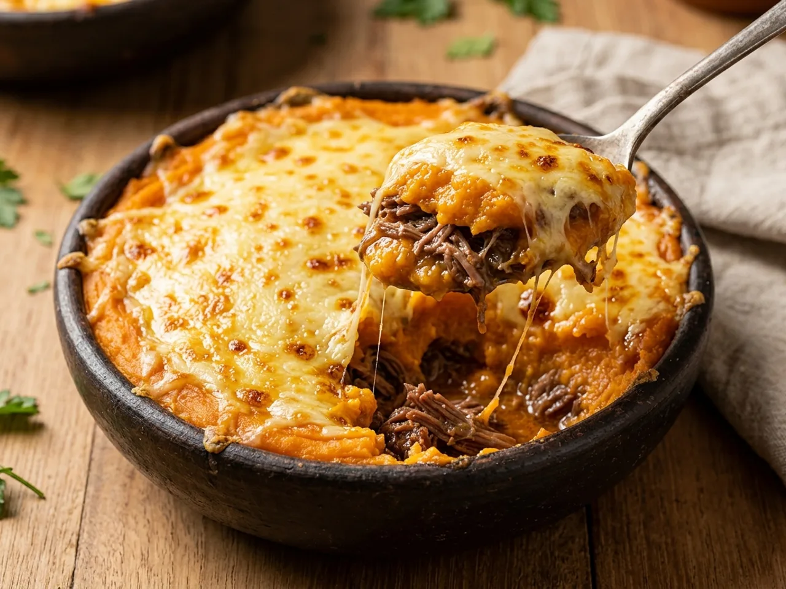
Cardápio do dia
Café
ovos mexidos com queijo, pão integral e suco de laranja com acerola
Lanche da manhã
vitamina de manga com leite
Almoço
lasanha de frango que sobrou do domingo, com salada de tomate
Lanche da tarde
maçã assada com canela e mel
Jantar
escondidinho de carne moída com purê de batata-doce e queijo
Ceia
leite morno
Ingredientes do jantar
150 g de carne moída de patinho, 1/2 cebola, 1 batata-doce grande, 1 colher de requeijão, muçarela, sal iodado.
Modo de preparo
Refogue a carne com cebola e sal até ficar bem cozida.
Cozinhe a batata-doce e amasse com o requeijão.
Num potinho, carne embaixo, purê em cima e muçarela.
Air fryer a 180 °C por 8 minutos, até gratinar.
Prompt da foto
Foto profissional de comida, escondidinho de carne em cumbuca de cerâmica, purê alaranjado de batata-doce coberto com queijo gratinado e dourado, colher tirando uma porção cremosa, luz natural, close apetitoso
Semana 2 27/10 a 03/11
dia8
terça, 27/10
Tilápia à parmegiana
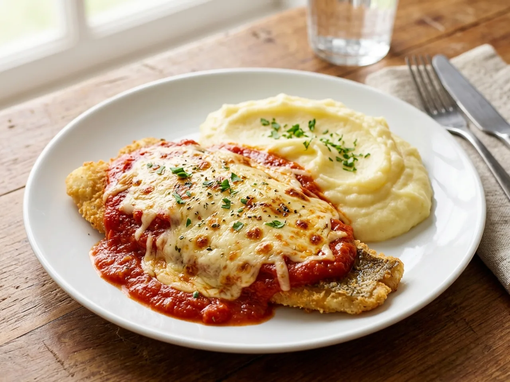
Cardápio do dia
Café
panqueca de banana com linhaça e mel, e leite com achocolatado
Lanche da manhã
iogurte com morango e chia
Almoço
tilápia à parmegiana com arroz, feijão e purê de batata
Lanche da tarde
banana com nozes picadas
Jantar
sopa de legumes com macarrão de letrinhas e frango desfiado
Ceia
leite morno com mel
Ingredientes do almoço
1 filé de tilápia, 1 ovo, panko misturado com 1 colher de linhaça, farinha, molho de tomate com espinafre batido, 2 fatias de muçarela, parmesão.
Modo de preparo
Tempere a tilápia com sal e limão. Farinha, ovo e panko com linhaça.
Air fryer a 200 °C por 10 minutos, virando com cuidado na metade.
Molho, muçarela e parmesão por cima, mais 4 minutos.
Prompt da foto
Foto profissional de comida, filé de peixe branco à parmegiana, empanado dourado, molho de tomate e muçarela derretida gratinada, purê de batata cremoso ao lado, prato branco, luz natural, close apetitoso
dia9
quarta, 28/10
Strogonoff de frango
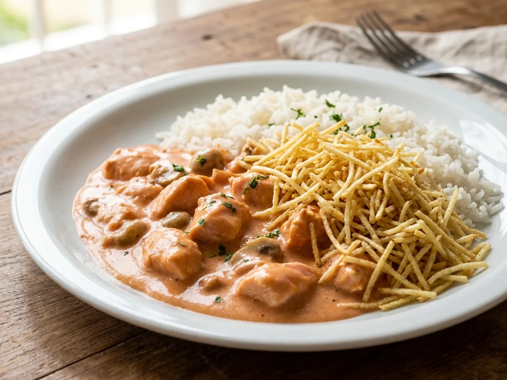
Cardápio do dia
Café
tapioca com ovo mexido e queijo, e suco de laranja
Lanche da manhã
vitamina de morango com leite e aveia
Almoço
strogonoff de frango com arroz, batata palha assada e brócolis
Lanche da tarde
maçã com castanha-do-pará (1 unidade)
Jantar
pão integral com ovo, queijo e tomate na air fryer
Ceia
iogurte
Ingredientes do almoço
150 g de peito de frango em cubos, 1/2 cebola, 1/2 xícara de molho de tomate, 2 colheres de requeijão ou creme de leite, milho, sal iodado. Batata palha: 1 batata ralada fina.
Modo de preparo
Doure a cebola, junte o frango e cozinhe bem, até não ter partes rosadas.
Junte o molho e o milho, cozinhe 5 minutos e desligue com o requeijão.
Batata ralada, seca no pano, com fio de azeite: air fryer a 180 °C por 15 minutos, mexendo.
Prompt da foto
Foto profissional de comida, strogonoff de frango cremoso e rosado, arroz branco soltinho e batata palha dourada e crocante por cima, prato branco, luz natural, close apetitoso
dia10
quinta, 29/10
Coxinha de frango na air fryer
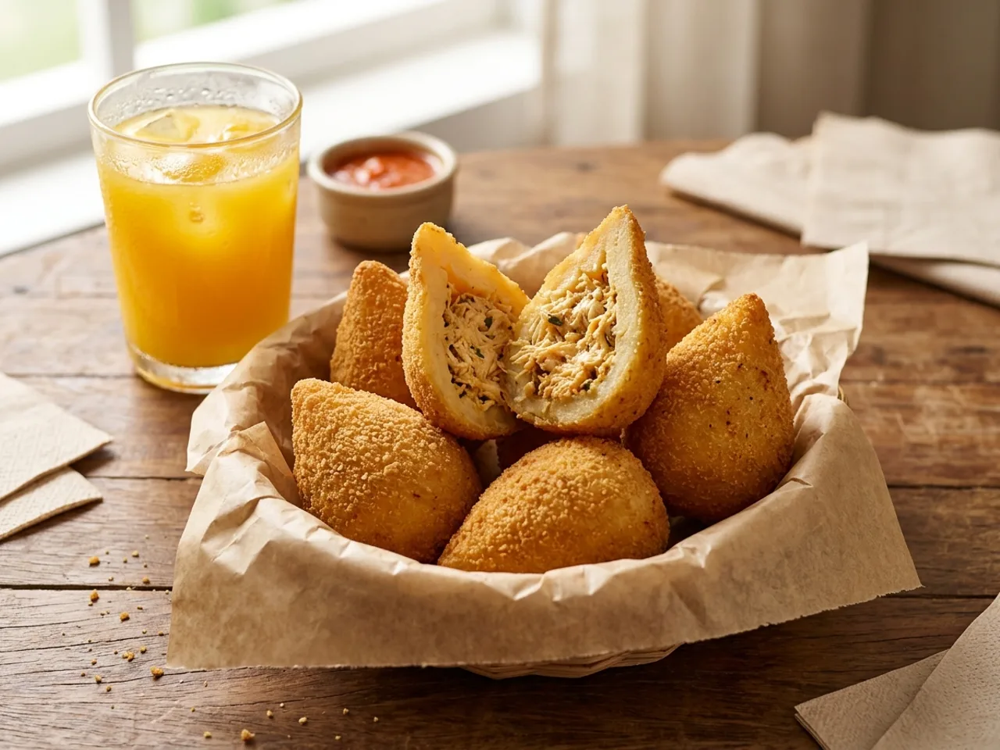
Cardápio do dia
Café
ovos mexidos com queijo, pão integral e vitamina de mamão
Lanche da manhã
iogurte com mel e nozes
Almoço
arroz, feijão, bife acebolado e couve refogada bem fininha
Lanche da tarde
coxinhas de frango na air fryer com suco de laranja e acerola
Jantar
creme de abóbora com queijo e torradinhas
Ceia
leite com cacau
Ingredientes das coxinhas
200 g de frango cozido e desfiado, 1 colher de requeijão, 2 batatas cozidas e amassadas com 1 colher de farinha, 1 ovo, panko.
Modo de preparo
Misture o frango com o requeijão.
Abra a massa de batata na mão, recheie e modele.
Passe no ovo e no panko. Air fryer a 200 °C por 12 minutos, até dourar.
Prompt da foto
Foto profissional de comida, coxinhas douradas e crocantes, uma partida ao meio mostrando recheio cremoso de frango, cesta de papel, copo de suco de laranja, luz natural, close apetitoso
dia11
sexta, 30/10
Pescada empanada com fritas
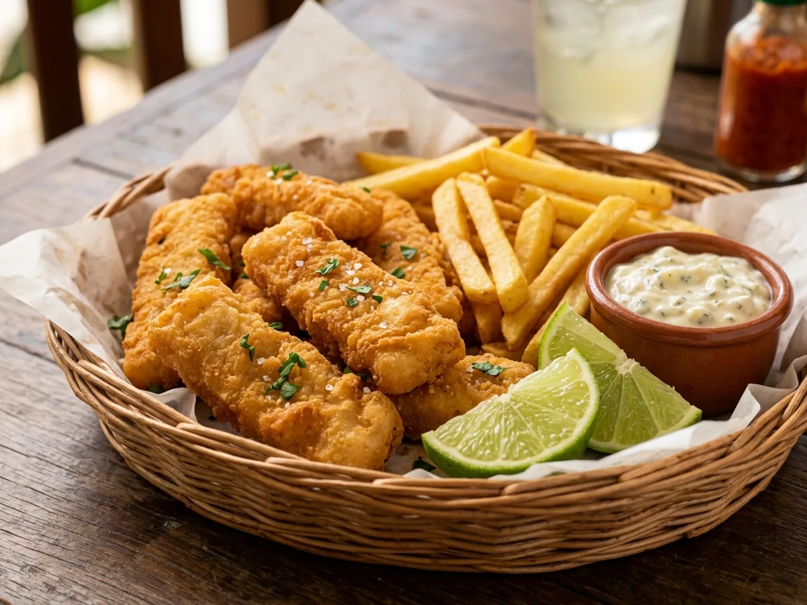
Cardápio do dia
Café
pão de queijo de frigideira e vitamina de banana com chia
Lanche da manhã
salada de frutas com iogurte
Almoço
iscas de pescada branca empanadas, batata frita na air fryer, arroz e salada de tomate
Lanche da tarde
torrada com requeijão
Jantar
macarrão ao molho de tomate com carne moída e cenoura ralada
Ceia
iogurte
Ingredientes do almoço
150 g de pescada branca em iscas, limão, 1 ovo, panko, farinha, sal iodado. 2 batatas em palitos.
Modo de preparo
Tempere a pescada com sal e limão. Farinha, ovo e panko.
Batata em palitos com fio de azeite: air fryer a 200 °C por 20 minutos, chacoalhando. Reserve.
Pescada a 200 °C por 10 minutos, virando na metade, até ficar branca e soltando em lascas.
Prompt da foto
Foto profissional de comida, iscas de peixe empanadas douradas e batatas fritas crocantes, limão e molhinho ao lado, papel manteiga, cesta, luz natural, close apetitoso
dia12
sábado, 31/10
Pizza caseira de frigideira
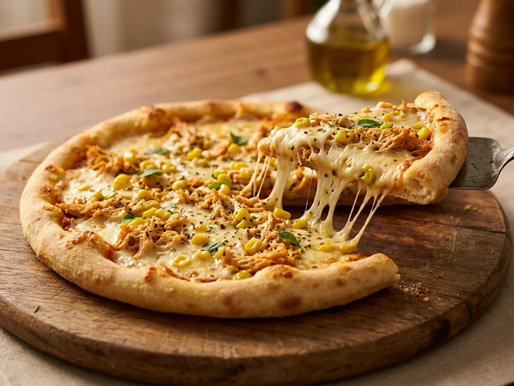
Cardápio do dia
Café
panqueca de aveia com banana e mel, e leite
Lanche da manhã
morangos com iogurte
Almoço
arroz, feijão, frango grelhado na air fryer e cenoura assada com mel
Lanche da tarde
manga picada
Jantar
pizza de massa de tapioca com molho, muçarela, frango e milho
Ceia
leite morno
Ingredientes do jantar
3 colheres de goma de tapioca, 1 ovo, 1 colher de leite, molho de tomate com espinafre batido, muçarela, frango desfiado, milho.
Modo de preparo
Misture a tapioca, o ovo e o leite. Asse em frigideira antiaderente dos dois lados.
Cubra com molho, frango, milho e muçarela.
Air fryer a 180 °C por 5 minutos, até o queijo derreter.
Prompt da foto
Foto profissional de comida, pizza individual com queijo derretido puxando, frango desfiado e milho, borda dourada, tábua de madeira, luz natural quente, close apetitoso
dia13
domingo, 01/11
Frango à parmegiana recheado
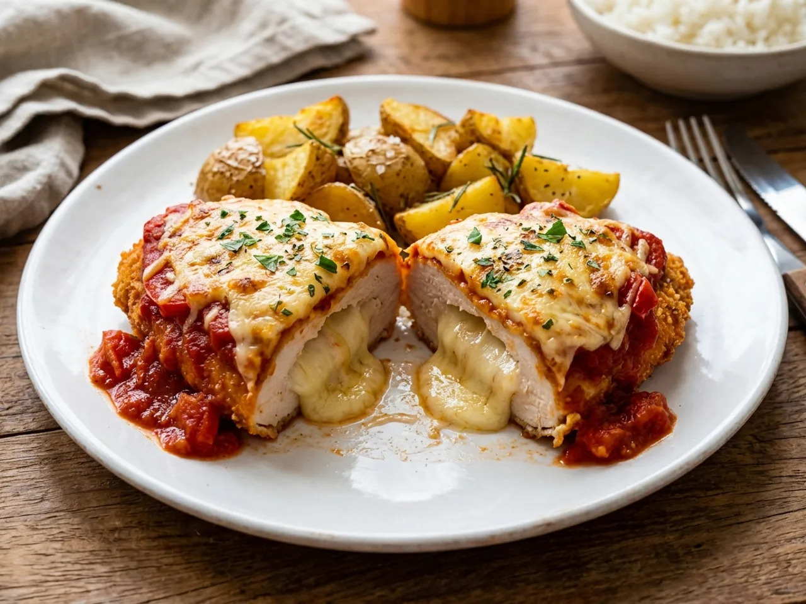
Cardápio do dia
Café
misto quente com ovo e suco de laranja com acerola
Lanche da manhã
vitamina de manga com leite e aveia
Almoço
frango à parmegiana recheado com queijo, arroz, feijão e batata rústica
Lanche da tarde
bolo de caneca de banana com aveia
Jantar
caldinho de feijão com queijo e torradinhas
Ceia
iogurte
Ingredientes do almoço
1 filé grosso de frango, 1 fatia de muçarela para o recheio, 1 ovo, panko com linhaça, farinha, molho de tomate com cenoura batida, muçarela e parmesão.
Modo de preparo
Abra um bolso no filé e coloque o queijo dentro. Feche com palito.
Farinha, ovo e panko. Air fryer a 190 °C por 16 minutos, virando na metade, até cozinhar bem no centro.
Molho, queijo e parmesão por cima, mais 4 minutos.
Prompt da foto
Foto profissional de comida, frango à parmegiana cortado ao meio com queijo derretido escorrendo do recheio, molho de tomate e queijo gratinado por cima, batatas rústicas, prato branco, luz natural, close apetitoso
dia14
segunda, 02/11
Panqueca de carne
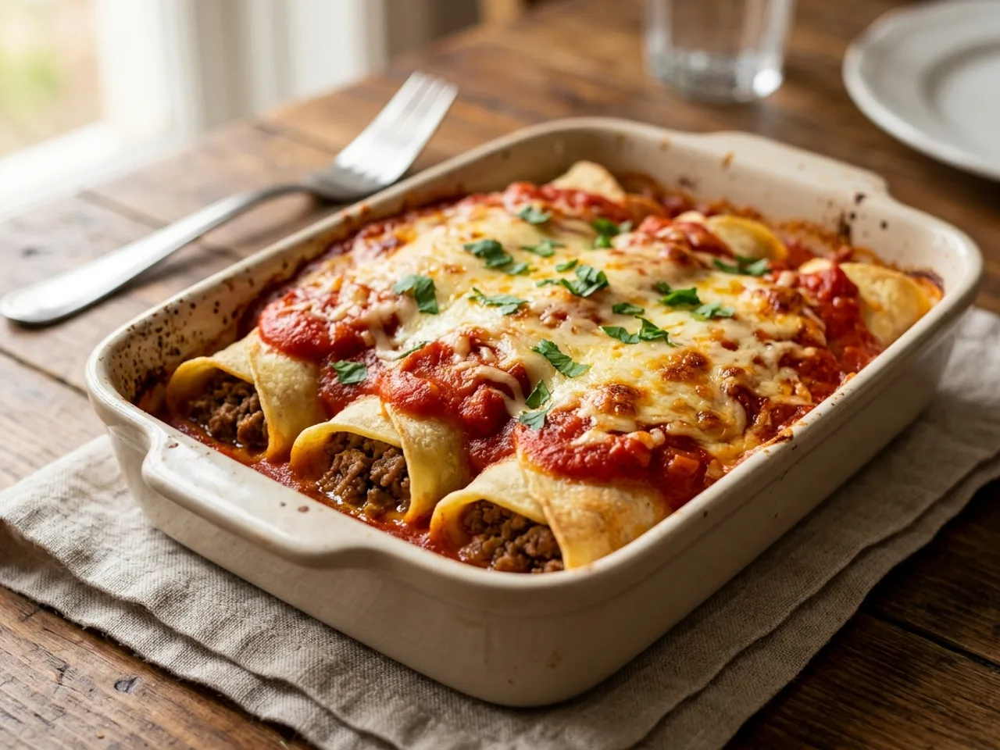
Cardápio do dia
Café
ovos mexidos com queijo e pão integral, e vitamina de morango
Lanche da manhã
banana com mel e chia
Almoço
panquecas de carne moída ao molho de tomate gratinadas
Lanche da tarde
iogurte com nozes
Jantar
tilápia assada na air fryer com purê de batata-doce e brócolis
Ceia
leite com cacau
Ingredientes do almoço
Massa: 1 ovo, 1/2 xícara de leite, 1/2 xícara de farinha. Recheio: 150 g de carne moída refogada com cenoura ralada. Molho de tomate e muçarela.
Modo de preparo
Bata a massa e faça 3 discos finos na frigideira.
Recheie com a carne bem cozida e enrole.
Cubra com molho e muçarela. Air fryer a 180 °C por 6 minutos.
Prompt da foto
Foto profissional de comida, panquecas enroladas recheadas com carne, cobertas com molho de tomate e queijo gratinado dourado, refratário pequeno, luz natural quente, close apetitoso
dia15
terça, 03/11
Festa da parmegiana de carne
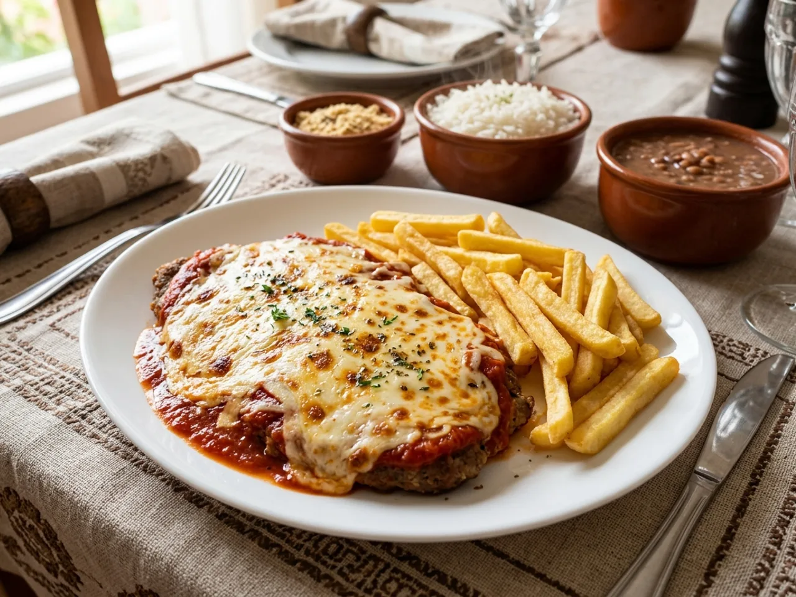
Cardápio do dia
Café
panqueca de banana com aveia e morango, e leite com achocolatado
Lanche da manhã
iogurte com mel e linhaça
Almoço
bife à parmegiana com arroz, feijão e batata frita na air fryer
Lanche da tarde
salada de frutas
Jantar
escondidinho de frango com purê de abóbora e queijo
Ceia
leite morno com mel
Ingredientes do almoço
1 bife de patinho batido, 1 ovo, panko, farinha, molho de tomate com espinafre batido, muçarela e parmesão. 2 batatas em palitos.
Modo de preparo
Batatas a 200 °C por 20 minutos. Reserve.
Empane o bife e asse a 200 °C por 12 minutos, até ficar bem passado.
Molho, muçarela e parmesão, mais 4 minutos.
Prompt da foto
Foto profissional de comida, bife à parmegiana grande e gratinado, batatas fritas douradas, arroz e feijão, prato branco, mesa festiva, luz natural, close apetitoso
Receitas-base
As cinco preparações que se repetem ao longo do livrinho.
Molho turbinado
Rende para 4 dias. Bata 2 caixas de molho de tomate com 1 punhado de espinafre cozido ou 1 cenoura cozida. Ferva por 5 minutos e guarde na geladeira em pote fechado.
Empanado crocante na air fryer
Farinha de trigo, ovo batido e panko com 1 colher de linhaça. Unte a cesta com fio de azeite. 200 °C, virando na metade.
Panqueca de banana
Amasse 1 banana, junte 1 ovo e 2 colheres de aveia. Frigideira antiaderente, 2 minutos de cada lado.
Pão de queijo de frigideira
1 ovo, 2 colheres de tapioca, 1 colher de requeijão e 2 colheres de muçarela ralada. Tampe e doure dos dois lados.
Vitamina turbinada
1 copo de leite, 1 fruta e 1 colher de chia ou linhaça. Bata e beba na hora.